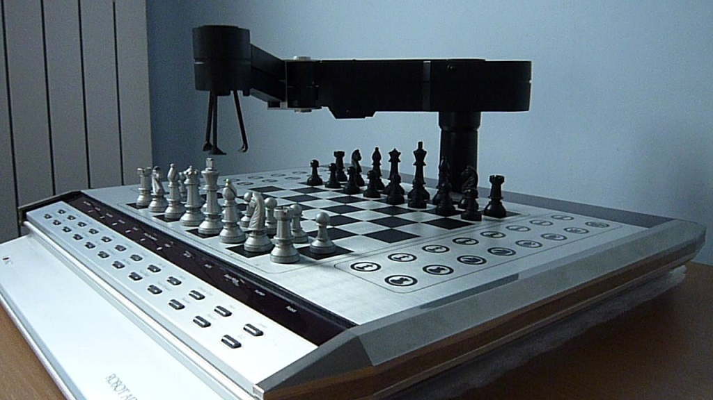
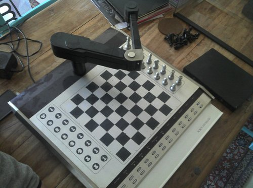

Novag Robot Adversary
The chess computer with a robot arm that moves your pieces for you

Overview
The Novag Robot Adversary (1982) was the first commercially released chess computer with a visible robotic arm. Where earlier machines announced their moves with lights or speech, the Adversary physically picked up its own pieces with a two-segment gripper arm on a rotating base post and placed them on the board — captures, castling, everything — while you played across the table on a real board.
The board was itself a sensor. Every piece carried a magnet in its base, and under each square a complementary magnet lifted to close a two-layer flexible-polyester switch matrix (64 board squares plus 32 'parking field' positions): press a piece onto a square and the machine knew exactly what you had done. The same field self-centered pieces for reliable gripping. The arm was driven by four DC Mabuchi motors — base slew, elbow via belt and cable against a torsion spring, vertical lift via bell crank, fingers via cam pulley — with optical encoders and home microswitches tracking position. The chess program was David Kittinger's MyChess: 32 KiB of Z80B code at 6 MHz with 5 KiB of RAM and a separate 8 KiB mechanics ROM.
Roughly 2,000–2,500 units were built at about DM 2,698 in Germany (roughly US$1,100–1,500), with a defect rate near 50% at launch; today a fraction of a percent still play a full game. The Computer History Museum holds one (accession 102645420, gift of computer-chess researcher Monroe Newborn) in its 'Mastering the Game' chess exhibit.
Deep dive
The Adversary turned chess output into physical action. Beyond making its moves, the arm performed a small theater: it pointed at a suggested move when you asked for a hint, gestured to indicate skill level, and could play itself — moving both sides and then resetting the board. Contemporary reviews and owner accounts describe the arm's 'emotions': picking up a piece and putting it down with emphasis, shaking, sounding tones, flashing LEDs — playing the part of a frustrated or triumphant opponent. An optional thermal printer recorded games. The machine did not tell you what it had decided; it reached out and did it.
US Patent 4,398,720 (filed January 5, 1981, granted August 16, 1983) covers the piece-sensing and movement system. Where Fidelity's sensory boards required you to press down on a square, each Adversary piece's base magnet interacts with a floating magnet in the board cavity: placing a piece draws the board magnet up and closes a flexible switch matrix. That gave the machine both reliable move detection and a self-centering mechanism that kept pieces exactly where the gripper expected them. Inventors include David Kittinger and Richard Hollander, assigned to California R&D Center.
German magazine Der Spiegel reviewed the Adversary in December 1982 under the headline 'Lästig, nicht lustig' ('Annoying, not funny'), noting the mechanical drama and the price. The machine is now documented in the chessprogramming wiki, in repair teardowns (the four Mabuchi motors are no longer obtainable), and in the Computer History Museum's collection. It is remembered as the moment a consumer computer put a hand on the board — a contrast to the museum's Fidelity Voice Sensory Chess Challenger, which senses and speaks but never touches.
Team & pioneers
- Novag Industries. Manufacturer; Peter and Gabrielle Auge's Hong Kong chess computer company
- David Kittinger. Chess programmer; the MyChess engine used in the Adversary, Savant, and Savant II
- California R&D Center. Robot hardware and sensing design; patent assignee (US 4,398,720)
- Monroe Newborn. Computer-chess researcher whose donation placed the Adversary in the Computer History Museum
Media


Sources
- US Patent 4,398,720 — Robot computer chess game
- Computer History Museum — 'Mastering the Game' collection record
- Chess Computer UK — Novag Robot Adversary page (Mike Watters)
- Chess Programming Wiki — Robot Adversary
- Der Spiegel 49/1982 — 'Lästig, nicht lustig'
- Kikuyumoja — repair teardown post
- ChessEval — Robot Adversary collection page (Maurice Ohayon)